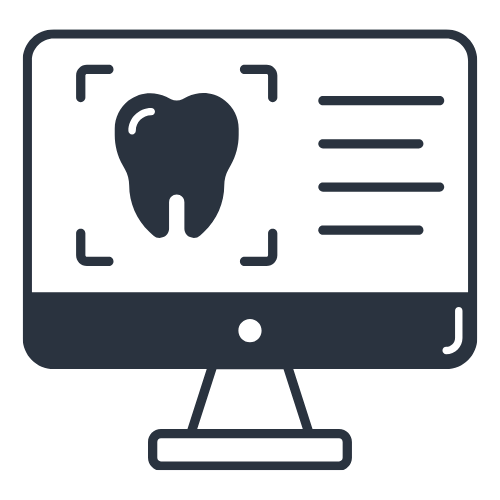
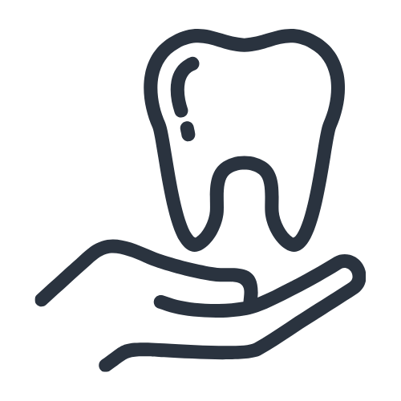
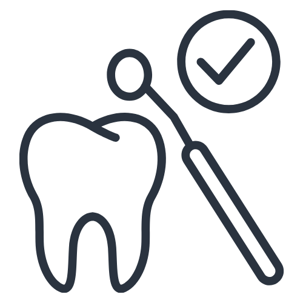
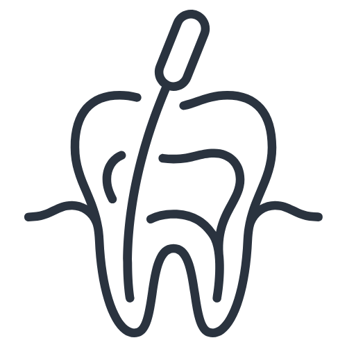
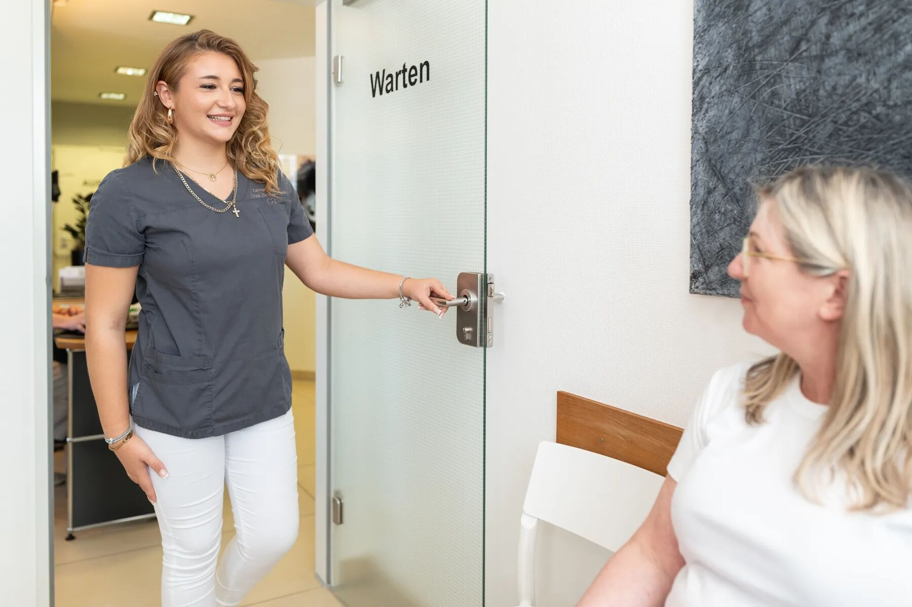

Wir begleiten Sie und Ihre Familie generationenübergreifend. Mit viel Einfühlungsvermögen, moderner Diagnostik und einem Lächeln sorgen wir für Ihre Zahngesundheit.
Schön, dass Sie da sind. Für uns als Zahnärzte in zweiter Generation ist die Zahngesundheit mehr als nur ein Beruf. Sie ist eine echte Herzensangelegenheit, die tief in unserer Familie verwurzelt ist.
Wir verbinden bewährte zahnärztliche Tradition mit den neuesten technologischen Fortschritten der modernen Zahnmedizin. In entspannter und herzlicher Atmosphäre nehmen wir uns Zeit für Ihre individuellen Anliegen und Wünsche, für ein rundum gesundes und strahlendes Lächeln.
Wir freuen uns darauf, Sie persönlich kennenzulernen! Ihre Dres. Zimmermann & das gesamte Team
1994–1995 Angestellte Zahnärztin Neustadt a. d. Wstr.
1995–1997 Angestellte Zahnärztin in Landau
1996 Promotion an der Uni Heidelberg
1997 Niederlassung in eigener Praxis in Edenkoben
1999 Geburt unseres Sohnes Jan Moritz
2000 Geburt unserer Tochter Charlotte
2002 Mein Mann unterstützt mich in der Praxis
2003 Geburt unseres Sohnes Frederick
2007 Geburt unserer Tochter Ella
2026 Eintritt unserer Tochter Charlotte in die Praxis
Dr. Charlotte Zimmermann
Zahnärztin
Schwerpunkt: Kinderzahnheilkunde & präventive Zahnmedizin mit viel Einfühlungsvermögen.
Vitai
2019–2025 Studium und Promotion der Zahnmedizin an der Danube Private University in Krems
seit Januar 2026 Angestellte Zahnärztin in der Praxis meiner Eltern
Behandlungsschwerpunkte

Digitaler Zahnersatz
Hochpräziser Zahnersatz aus dem eigenen Praxislabor, komplett digital, ohne lästigen Abdruck und oft direkt an einem Tag.
Hightech-Präzision

Zahnheilkunde
Von den ersten Milchzähnen bis ins Erwachsenenalter. Wir sorgen mit einer einfühlsamen und modernen Behandlung dafür, dass sich jeder rundum wohlfühlen.
Mit viel Feingefühl
Ästhetische Zahnmedizin
Veneers, schonendes Bleaching und passgenaue Keramik für ein natürlich strahlendes und sicheres Lächeln.
Für Ihr Selbstbewusstsein

Prophylaxe & Vorsorge
Professionelle Zahnreinigung (PZR) und individuelle Präventionskonzepte für dauerhaft gesunde Zähne.
Vorbeugen ist besser
Implantologie
Fester Halt, höchste Stabilität und perfekte ästhetische Ergebnisse durch moderne Zahnimplantate.
Feste Zähne

Zahnerhalt & Parodontitis
Schonende Wurzelbehandlungen und moderne Parodontitistherapien zum langfristigen Erhalt Ihrer natürlichen Zähne.
Erhalt im Fokus
Besondere Fürsorge bei Angst
Sie haben ein ungutes Gefühl vor dem Zahnarztbesuch? Bei uns stehen Sie und Ihre Bedürfnisse an erster Stelle. Wir nehmen uns Zeit, hören zu und behandeln Sie absolut schmerzfrei und in einem Tempo, das für Sie stimmt.
Haben Sie außerhalb unserer Öffnungszeiten oder am Wochenende akute Zahnschmerzen? Den aktuellen zahnärztlichen Notdienst für unsere Region können Sie schnell und unkompliziert abrufen.
Wir sind gerne für Sie da
Haben Sie Fragen zu unseren Behandlungen oder möchten Sie direkt einen Termin vereinbaren? Unser Team freut sich auf Ihre Nachricht und meldet sich schnellstmöglich zurück.

Anfahrt mit Google Maps
Mit dem Klick wird die Karte von Google geladen. Dabei wird Ihre IP-Adresse an Google übertragen. Mehr dazu in der Datenschutzerklärung.
Häufig gestellte Fragen
Hier finden Sie Antworten auf die wichtigsten Fragen rund um unsere Behandlungen und Termine. Sollte Ihre Frage hier nicht dabei sein, schreiben Sie uns einfach eine Nachricht, unser Team hilft Ihnen gerne weiter.
Ab wann sollten Kinder zum Zahnarzt?
Der erste Zahnarztbesuch sollte bereits mit dem Durchbruch der ersten Zähne erfolgen. So gewöhnen sich Kinder frühzeitig an eine entspannte und positive Behandlung.
Ist die professionelle Zahnreinigung sinnvoll?
Ja, eine regelmäßige professionelle Zahnreinigung hilft dabei, Beläge zu entfernen, Zahnfleischerkrankungen vorzubeugen und die Zähne langfristig gesund zu halten.
Was bedeutet digitale Zahnmedizin?
Durch moderne digitale Technologien wie CAD/CAM können Behandlungen präziser, komfortabler und häufig deutlich schneller durchgeführt werden.
Werden Angstpatienten bei Ihnen einfühlsam behandelt?
Selbstverständlich. Wir nehmen uns Zeit für eine ruhige, verständnisvolle Betreuung und gestalten Behandlungen so angenehm wie möglich.
Wie oft sollte ich zur Kontrolle kommen?
Wir empfehlen eine zahnärztliche Kontrolle alle sechs Monate, um Erkrankungen frühzeitig zu erkennen und die Zahngesundheit langfristig zu erhalten.
Wo finde ich die Zahnärzte Dres. Zimmermann in Edenkoben?
Die Gemeinschaftspraxis Dres. Zimmermann befindet sich in der Rappenstr. 19, 67480 Edenkoben, direkt am Bahnhof. Sprechzeiten sind Montag, Dienstag und Donnerstag von 08:00 bis 18:00 Uhr, Mittwoch von 08:30 bis 17:00 Uhr und Freitag von 08:00 bis 14:00 Uhr, Termine nach Vereinbarung. Telefon 06323 93434, E-Mail info@zahnaerzte-edenkoben.de.
Impressum
Entwurf, keine Rechtsberatung. Die Angaben wurden von der bestehenden Webseite übernommen. Gelb markierte Punkte fehlen dort und sind vor dem Livegang zu ergänzen.
Berufsrechtliche Regelungen: Zahnheilkundegesetz, Heilberufsgesetz Rheinland-Pfalz, Berufsordnung der Landeszahnärztekammer Rheinland-Pfalz; abrufbar über die Kammer (bitte bestätigen)
Wir sind nicht bereit oder verpflichtet, an Streitbeilegungsverfahren vor einer Verbraucherschlichtungsstelle teilzunehmen.
Konzeption, Gestaltung und Umsetzung
AO Consulting GmbH Zeiloch 13 76646 Bruchsal ao-consult.de
Bildnachweis
Artemjew Photography (bitte Nennung mit dem Fotografen abstimmen)
Haftung für Inhalte
Als Diensteanbieter sind wir gemäß § 7 Abs.1 DDG für eigene Inhalte auf diesen Seiten nach den allgemeinen Gesetzen verantwortlich. Nach §§ 8 bis 10 DDG sind wir als Diensteanbieter jedoch nicht verpflichtet, übermittelte oder gespeicherte fremde Informationen zu überwachen oder nach Umständen zu forschen, die auf eine rechtswidrige Tätigkeit hinweisen. Verpflichtungen zur Entfernung oder Sperrung der Nutzung von Informationen nach den allgemeinen Gesetzen bleiben hiervon unberührt. Eine diesbezügliche Haftung ist jedoch erst ab dem Zeitpunkt der Kenntnis einer konkreten Rechtsverletzung möglich. Bei Bekanntwerden von entsprechenden Rechtsverletzungen werden wir diese Inhalte umgehend entfernen.
Haftung für Links
Unser Angebot enthält Links zu externen Websites Dritter, auf deren Inhalte wir keinen Einfluss haben. Deshalb können wir für diese fremden Inhalte auch keine Gewähr übernehmen. Für die Inhalte der verlinkten Seiten ist stets der jeweilige Anbieter oder Betreiber der Seiten verantwortlich. Die verlinkten Seiten wurden zum Zeitpunkt der Verlinkung auf mögliche Rechtsverstöße überprüft. Rechtswidrige Inhalte waren zum Zeitpunkt der Verlinkung nicht erkennbar.
Eine permanente inhaltliche Kontrolle der verlinkten Seiten ist jedoch ohne konkrete Anhaltspunkte einer Rechtsverletzung nicht zumutbar. Bei Bekanntwerden von Rechtsverletzungen werden wir derartige Links umgehend entfernen.
Urheberrecht
Die durch die Seitenbetreiber erstellten Inhalte und Werke auf diesen Seiten unterliegen dem deutschen Urheberrecht. Die Vervielfältigung, Bearbeitung, Verbreitung und jede Art der Verwertung außerhalb der Grenzen des Urheberrechtes bedürfen der schriftlichen Zustimmung des jeweiligen Autors bzw. Erstellers. Downloads und Kopien dieser Seite sind nur für den privaten, nicht kommerziellen Gebrauch gestattet.
Soweit die Inhalte auf dieser Seite nicht vom Betreiber erstellt wurden, werden die Urheberrechte Dritter beachtet. Insbesondere werden Inhalte Dritter als solche gekennzeichnet. Sollten Sie trotzdem auf eine Urheberrechtsverletzung aufmerksam werden, bitten wir um einen entsprechenden Hinweis. Bei Bekanntwerden von Rechtsverletzungen werden wir derartige Inhalte umgehend entfernen.
Datenschutzerklärung
Entwurf, keine Rechtsberatung. Übernommen von der bestehenden Webseite und an die neue Technik angepasst: eigener Einwilligungsspeicher statt Borlabs, lokale Schriften statt Google Fonts, Matomo statt Google Analytics, Karte erst nach Einwilligung, kein reCAPTCHA. Gelb markierte Angaben vor dem Livegang prüfen.
1. Datenschutz auf einen Blick
Allgemeine Hinweise
Die folgenden Hinweise geben einen einfachen Überblick darüber, was mit Ihren personenbezogenen Daten passiert, wenn Sie diese Website besuchen. Personenbezogene Daten sind alle Daten, mit denen Sie persönlich identifiziert werden können. Ausführliche Informationen zum Thema Datenschutz entnehmen Sie unserer unter diesem Text aufgeführten Datenschutzerklärung.
Datenerfassung auf dieser Website
Wer ist verantwortlich für die Datenerfassung auf dieser Website?
Die Datenverarbeitung auf dieser Website erfolgt durch den Websitebetreiber. Dessen Kontaktdaten können Sie dem Abschnitt „Hinweis zur verantwortlichen Stelle“ in dieser Datenschutzerklärung entnehmen.
Wie erfassen wir Ihre Daten?
Ihre Daten werden zum einen dadurch erhoben, dass Sie uns diese mitteilen. Hierbei kann es sich z. B. um Daten handeln, die Sie in ein Kontaktformular eingeben.
Andere Daten werden automatisch oder nach Ihrer Einwilligung beim Besuch der Website durch unsere IT-Systeme erfasst. Das sind vor allem technische Daten (z. B. Internetbrowser, Betriebssystem oder Uhrzeit des Seitenaufrufs). Die Erfassung dieser Daten erfolgt automatisch, sobald Sie diese Website betreten.
Wofür nutzen wir Ihre Daten?
Ein Teil der Daten wird erhoben, um eine fehlerfreie Bereitstellung der Website zu gewährleisten. Andere Daten können zur Analyse Ihres Nutzerverhaltens verwendet werden. Sofern über die Website Verträge geschlossen oder angebahnt werden können, werden die übermittelten Daten auch für Vertragsangebote, Bestellungen oder sonstige Auftragsanfragen verarbeitet.
Welche Rechte haben Sie bezüglich Ihrer Daten?
Sie haben jederzeit das Recht, unentgeltlich Auskunft über Herkunft, Empfänger und Zweck Ihrer gespeicherten personenbezogenen Daten zu erhalten. Sie haben außerdem ein Recht, die Berichtigung oder Löschung dieser Daten zu verlangen. Wenn Sie eine Einwilligung zur Datenverarbeitung erteilt haben, können Sie diese Einwilligung jederzeit für die Zukunft widerrufen. Außerdem haben Sie das Recht, unter bestimmten Umständen die Einschränkung der Verarbeitung Ihrer personenbezogenen Daten zu verlangen. Des Weiteren steht Ihnen ein Beschwerderecht bei der zuständigen Aufsichtsbehörde zu.
Hierzu sowie zu weiteren Fragen zum Thema Datenschutz können Sie sich jederzeit an uns wenden.
Analyse-Tools und Tools von Drittanbietern
Beim Besuch dieser Website kann Ihr Surf-Verhalten statistisch ausgewertet werden. Das geschieht vor allem mit sogenannten Analyseprogrammen. Auf dieser Website geschieht das ausschließlich nach Ihrer Einwilligung über das Einwilligungsfenster.
Detaillierte Informationen zu diesen Analyseprogrammen finden Sie in der folgenden Datenschutzerklärung.
2. Hosting
Wir hosten die Inhalte unserer Website bei folgendem Anbieter:
Raidboxes (bis zum Umzug) bzw. ALL-INKL.COM nach dem Livegang, bitte den tatsächlichen Hoster eintragen
Anbieter ist die Raidboxes GmbH, Hafenstr. 32, 48153 Münster (nachfolgend Raidboxes). Wenn Sie unsere Website besuchen, erfasst der Hoster verschiedene Logfiles inklusive Ihrer IP-Adressen.
Die Verwendung des Hosters erfolgt auf Grundlage von Art. 6 Abs. 1 lit. f DSGVO. Wir haben ein berechtigtes Interesse an einer möglichst zuverlässigen Darstellung unserer Website. Sofern eine entsprechende Einwilligung abgefragt wurde, erfolgt die Verarbeitung ausschließlich auf Grundlage von Art. 6 Abs. 1 lit. a DSGVO und § 25 Abs. 1 TDDDG, soweit die Einwilligung die Speicherung von Cookies oder den Zugriff auf Informationen im Endgerät des Nutzers (z. B. für Device-Fingerprinting) im Sinne des TDDDG umfasst. Die Einwilligung ist jederzeit widerrufbar.
3. Allgemeine Hinweise und Pflichtinformationen
Datenschutz
Die Betreiber dieser Seiten nehmen den Schutz Ihrer persönlichen Daten sehr ernst. Wir behandeln Ihre personenbezogenen Daten vertraulich und entsprechend den gesetzlichen Datenschutzvorschriften sowie dieser Datenschutzerklärung.
Wenn Sie diese Website benutzen, werden verschiedene personenbezogene Daten erhoben. Personenbezogene Daten sind Daten, mit denen Sie persönlich identifiziert werden können. Die vorliegende Datenschutzerklärung erläutert, welche Daten wir erheben und wofür wir sie nutzen. Sie erläutert auch, wie und zu welchem Zweck das geschieht.
Wir weisen darauf hin, dass die Datenübertragung im Internet (z. B. bei der Kommunikation per E-Mail) Sicherheitslücken aufweisen kann. Ein lückenloser Schutz der Daten vor dem Zugriff durch Dritte ist nicht möglich.
Hinweis zur verantwortlichen Stelle
Die verantwortliche Stelle für die Datenverarbeitung auf dieser Website ist:
Verantwortliche Stelle ist die natürliche oder juristische Person, die allein oder gemeinsam mit anderen über die Zwecke und Mittel der Verarbeitung von personenbezogenen Daten (z. B. Namen, E-Mail-Adressen o. Ä.) entscheidet.
Speicherdauer
Soweit innerhalb dieser Datenschutzerklärung keine speziellere Speicherdauer genannt wurde, verbleiben Ihre personenbezogenen Daten bei uns, bis der Zweck für die Datenverarbeitung entfällt. Wenn Sie ein berechtigtes Löschersuchen geltend machen oder eine Einwilligung zur Datenverarbeitung widerrufen, werden Ihre Daten gelöscht, sofern wir keine anderen rechtlich zulässigen Gründe für die Speicherung Ihrer personenbezogenen Daten haben (z. B. steuer- oder handelsrechtliche Aufbewahrungsfristen); im letztgenannten Fall erfolgt die Löschung nach Fortfall dieser Gründe.
Allgemeine Hinweise zu den Rechtsgrundlagen der Datenverarbeitung auf dieser Website
Sofern Sie in die Datenverarbeitung eingewilligt haben, verarbeiten wir Ihre personenbezogenen Daten auf Grundlage von Art. 6 Abs. 1 lit. a DSGVO bzw. Art. 9 Abs. 2 lit. a DSGVO, sofern besondere Datenkategorien nach Art. 9 Abs. 1 DSGVO verarbeitet werden. Im Falle einer ausdrücklichen Einwilligung in die Übertragung personenbezogener Daten in Drittstaaten erfolgt die Datenverarbeitung außerdem auf Grundlage von Art. 49 Abs. 1 lit. a DSGVO. Sofern Sie in die Speicherung von Cookies oder in den Zugriff auf Informationen in Ihr Endgerät (z. B. via Device-Fingerprinting) eingewilligt haben, erfolgt die Datenverarbeitung zusätzlich auf Grundlage von § 25 Abs. 1 TDDDG. Die Einwilligung ist jederzeit widerrufbar. Sind Ihre Daten zur Vertragserfüllung oder zur Durchführung vorvertraglicher Maßnahmen erforderlich, verarbeiten wir Ihre Daten auf Grundlage des Art. 6 Abs. 1 lit. b DSGVO. Des Weiteren verarbeiten wir Ihre Daten, sofern diese zur Erfüllung einer rechtlichen Verpflichtung erforderlich sind, auf Grundlage von Art. 6 Abs. 1 lit. c DSGVO. Die Datenverarbeitung kann ferner auf Grundlage unseres berechtigten Interesses nach Art. 6 Abs. 1 lit. f DSGVO erfolgen. Über die jeweils im Einzelfall einschlägigen Rechtsgrundlagen wird in den folgenden Absätzen dieser Datenschutzerklärung informiert.
Empfänger von personenbezogenen Daten
Im Rahmen unserer Geschäftstätigkeit arbeiten wir mit verschiedenen externen Stellen zusammen. Dabei ist teilweise auch eine Übermittlung von personenbezogenen Daten an diese externen Stellen erforderlich. Wir geben personenbezogene Daten nur dann an externe Stellen weiter, wenn dies im Rahmen einer Vertragserfüllung erforderlich ist, wenn wir gesetzlich hierzu verpflichtet sind (z. B. Weitergabe von Daten an Steuerbehörden), wenn wir ein berechtigtes Interesse nach Art. 6 Abs. 1 lit. f DSGVO an der Weitergabe haben oder wenn eine sonstige Rechtsgrundlage die Datenweitergabe erlaubt. Beim Einsatz von Auftragsverarbeitern geben wir personenbezogene Daten unserer Kunden nur auf Grundlage eines gültigen Vertrags über Auftragsverarbeitung weiter. Im Falle einer gemeinsamen Verarbeitung wird ein Vertrag über gemeinsame Verarbeitung geschlossen.
Widerruf Ihrer Einwilligung zur Datenverarbeitung
Viele Datenverarbeitungsvorgänge sind nur mit Ihrer ausdrücklichen Einwilligung möglich. Sie können eine bereits erteilte Einwilligung jederzeit widerrufen. Die Rechtmäßigkeit der bis zum Widerruf erfolgten Datenverarbeitung bleibt vom Widerruf unberührt. Einwilligungen, die Sie über das Einwilligungsfenster dieser Website erteilt haben, können Sie jederzeit über den Link „Cookie-Einstellungen“ in der Fußzeile widerrufen.
Widerspruchsrecht gegen die Datenerhebung in besonderen Fällen sowie gegen Direktwerbung (Art. 21 DSGVO)
WENN DIE DATENVERARBEITUNG AUF GRUNDLAGE VON ART. 6 ABS. 1 LIT. E ODER F DSGVO ERFOLGT, HABEN SIE JEDERZEIT DAS RECHT, AUS GRÜNDEN, DIE SICH AUS IHRER BESONDEREN SITUATION ERGEBEN, GEGEN DIE VERARBEITUNG IHRER PERSONENBEZOGENEN DATEN WIDERSPRUCH EINZULEGEN; DIES GILT AUCH FÜR EIN AUF DIESE BESTIMMUNGEN GESTÜTZTES PROFILING. DIE JEWEILIGE RECHTSGRUNDLAGE, AUF DENEN EINE VERARBEITUNG BERUHT, ENTNEHMEN SIE DIESER DATENSCHUTZERKLÄRUNG. WENN SIE WIDERSPRUCH EINLEGEN, WERDEN WIR IHRE BETROFFENEN PERSONENBEZOGENEN DATEN NICHT MEHR VERARBEITEN, ES SEI DENN, WIR KÖNNEN ZWINGENDE SCHUTZWÜRDIGE GRÜNDE FÜR DIE VERARBEITUNG NACHWEISEN, DIE IHRE INTERESSEN, RECHTE UND FREIHEITEN ÜBERWIEGEN ODER DIE VERARBEITUNG DIENT DER GELTENDMACHUNG, AUSÜBUNG ODER VERTEIDIGUNG VON RECHTSANSPRÜCHEN (WIDERSPRUCH NACH ART. 21 ABS. 1 DSGVO).
WERDEN IHRE PERSONENBEZOGENEN DATEN VERARBEITET, UM DIREKTWERBUNG ZU BETREIBEN, SO HABEN SIE DAS RECHT, JEDERZEIT WIDERSPRUCH GEGEN DIE VERARBEITUNG SIE BETREFFENDER PERSONENBEZOGENER DATEN ZUM ZWECKE DERARTIGER WERBUNG EINZULEGEN; DIES GILT AUCH FÜR DAS PROFILING, SOWEIT ES MIT SOLCHER DIREKTWERBUNG IN VERBINDUNG STEHT. WENN SIE WIDERSPRECHEN, WERDEN IHRE PERSONENBEZOGENEN DATEN ANSCHLIESSEND NICHT MEHR ZUM ZWECKE DER DIREKTWERBUNG VERWENDET (WIDERSPRUCH NACH ART. 21 ABS. 2 DSGVO).
Beschwerderecht bei der zuständigen Aufsichtsbehörde
Im Falle von Verstößen gegen die DSGVO steht den Betroffenen ein Beschwerderecht bei einer Aufsichtsbehörde, insbesondere in dem Mitgliedstaat ihres gewöhnlichen Aufenthalts, ihres Arbeitsplatzes oder des Orts des mutmaßlichen Verstoßes zu. Das Beschwerderecht besteht unbeschadet anderweitiger verwaltungsrechtlicher oder gerichtlicher Rechtsbehelfe.
Recht auf Datenübertragbarkeit
Sie haben das Recht, Daten, die wir auf Grundlage Ihrer Einwilligung oder in Erfüllung eines Vertrags automatisiert verarbeiten, an sich oder an einen Dritten in einem gängigen, maschinenlesbaren Format aushändigen zu lassen. Sofern Sie die direkte Übertragung der Daten an einen anderen Verantwortlichen verlangen, erfolgt dies nur, soweit es technisch machbar ist.
Auskunft, Berichtigung und Löschung
Sie haben im Rahmen der geltenden gesetzlichen Bestimmungen jederzeit das Recht auf unentgeltliche Auskunft über Ihre gespeicherten personenbezogenen Daten, deren Herkunft und Empfänger und den Zweck der Datenverarbeitung und ggf. ein Recht auf Berichtigung oder Löschung dieser Daten. Hierzu sowie zu weiteren Fragen zum Thema personenbezogene Daten können Sie sich jederzeit an uns wenden.
Recht auf Einschränkung der Verarbeitung
Sie haben das Recht, die Einschränkung der Verarbeitung Ihrer personenbezogenen Daten zu verlangen. Hierzu können Sie sich jederzeit an uns wenden. Das Recht auf Einschränkung der Verarbeitung besteht in folgenden Fällen:
Wenn Sie die Richtigkeit Ihrer bei uns gespeicherten personenbezogenen Daten bestreiten, benötigen wir in der Regel Zeit, um dies zu überprüfen. Für die Dauer der Prüfung haben Sie das Recht, die Einschränkung der Verarbeitung Ihrer personenbezogenen Daten zu verlangen.
Wenn die Verarbeitung Ihrer personenbezogenen Daten unrechtmäßig geschah/geschieht, können Sie statt der Löschung die Einschränkung der Datenverarbeitung verlangen.
Wenn wir Ihre personenbezogenen Daten nicht mehr benötigen, Sie sie jedoch zur Ausübung, Verteidigung oder Geltendmachung von Rechtsansprüchen benötigen, haben Sie das Recht, statt der Löschung die Einschränkung der Verarbeitung Ihrer personenbezogenen Daten zu verlangen.
Wenn Sie einen Widerspruch nach Art. 21 Abs. 1 DSGVO eingelegt haben, muss eine Abwägung zwischen Ihren und unseren Interessen vorgenommen werden. Solange noch nicht feststeht, wessen Interessen überwiegen, haben Sie das Recht, die Einschränkung der Verarbeitung Ihrer personenbezogenen Daten zu verlangen.
Wenn Sie die Verarbeitung Ihrer personenbezogenen Daten eingeschränkt haben, dürfen diese Daten (von ihrer Speicherung abgesehen) nur mit Ihrer Einwilligung oder zur Geltendmachung, Ausübung oder Verteidigung von Rechtsansprüchen oder zum Schutz der Rechte einer anderen natürlichen oder juristischen Person oder aus Gründen eines wichtigen öffentlichen Interesses der Europäischen Union oder eines Mitgliedstaats verarbeitet werden.
SSL- bzw. TLS-Verschlüsselung
Diese Seite nutzt aus Sicherheitsgründen und zum Schutz der Übertragung vertraulicher Inhalte, wie zum Beispiel Anfragen oder Terminwünsche, die Sie an uns als Seitenbetreiber senden, eine SSL- bzw. TLS-Verschlüsselung. Eine verschlüsselte Verbindung erkennen Sie daran, dass die Adresszeile des Browsers von „http://“ auf „https://“ wechselt und an dem Schloss-Symbol in Ihrer Browserzeile.
Wenn die SSL- bzw. TLS-Verschlüsselung aktiviert ist, können die Daten, die Sie an uns übermitteln, nicht von Dritten mitgelesen werden.
4. Datenerfassung auf dieser Website
Cookies und lokaler Speicher
Unsere Internetseiten verwenden so genannte „Cookies“ und den lokalen Speicher Ihres Browsers (Local Storage). Cookies sind kleine Datenpakete und richten auf Ihrem Endgerät keinen Schaden an. Sie werden entweder vorübergehend für die Dauer einer Sitzung (Session-Cookies) oder dauerhaft (permanente Cookies) auf Ihrem Endgerät gespeichert. Session-Cookies werden nach Ende Ihres Besuchs automatisch gelöscht. Permanente Cookies bleiben auf Ihrem Endgerät gespeichert, bis Sie diese selbst löschen oder eine automatische Löschung durch Ihren Webbrowser erfolgt.
Cookies können von uns (First-Party-Cookies) oder von Drittunternehmen stammen (sog. Third-Party-Cookies). Third-Party-Cookies ermöglichen die Einbindung bestimmter Dienstleistungen von Drittunternehmen innerhalb von Webseiten.
Cookies haben verschiedene Funktionen. Zahlreiche Cookies sind technisch notwendig, da bestimmte Webseitenfunktionen ohne diese nicht funktionieren würden. Andere Cookies können zur Auswertung des Nutzerverhaltens oder zu Werbezwecken verwendet werden.
Cookies und Speichereinträge, die zur Durchführung des elektronischen Kommunikationsvorgangs, zur Bereitstellung bestimmter, von Ihnen erwünschter Funktionen oder zur Optimierung der Website erforderlich sind (notwendige Cookies), werden auf Grundlage von Art. 6 Abs. 1 lit. f DSGVO gespeichert, sofern keine andere Rechtsgrundlage angegeben wird. Der Websitebetreiber hat ein berechtigtes Interesse an der Speicherung von notwendigen Cookies zur technisch fehlerfreien und optimierten Bereitstellung seiner Dienste. Sofern eine Einwilligung zur Speicherung von Cookies und vergleichbaren Wiedererkennungstechnologien abgefragt wurde, erfolgt die Verarbeitung ausschließlich auf Grundlage dieser Einwilligung (Art. 6 Abs. 1 lit. a DSGVO und § 25 Abs. 1 TDDDG); die Einwilligung ist jederzeit widerrufbar.
Sie können Ihren Browser so einstellen, dass Sie über das Setzen von Cookies informiert werden und Cookies nur im Einzelfall erlauben, die Annahme von Cookies für bestimmte Fälle oder generell ausschließen sowie das automatische Löschen der Cookies beim Schließen des Browsers aktivieren. Bei der Deaktivierung von Cookies kann die Funktionalität dieser Website eingeschränkt sein.
Einwilligung über das Einwilligungsfenster dieser Website
Unsere Website nutzt ein eigenes Einwilligungsfenster, um Ihre Einwilligung zur Speicherung bestimmter Cookies in Ihrem Browser oder zum Einsatz bestimmter Technologien einzuholen und diese datenschutzkonform zu dokumentieren. Es kommt kein externer Anbieter zum Einsatz, es werden keine Daten an Dritte übertragen.
Wenn Sie unsere Website betreten und eine Auswahl treffen, wird im lokalen Speicher Ihres Browsers (kein Cookie) festgehalten, welchen Kategorien Sie zugestimmt oder widersprochen haben, zusammen mit dem Zeitpunkt der Entscheidung. Es wird keine Kennung gespeichert, die Sie als Person identifiziert. Diese Speicherung ist für den Nachweis der Einwilligung erforderlich und erfolgt auf Grundlage von § 25 Abs. 2 Nr. 2 TDDDG sowie Art. 6 Abs. 1 lit. c DSGVO.
Die Entscheidung gilt 12 Monate. Danach fragen wir erneut. Sie können Ihre Auswahl jederzeit über den Link „Cookie-Einstellungen“ in der Fußzeile ändern oder widerrufen.
Server-Log-Dateien
Der Provider der Seiten erhebt und speichert automatisch Informationen in so genannten Server-Log-Dateien, die Ihr Browser automatisch an uns übermittelt. Dies sind:
Browsertyp und Browserversion
verwendetes Betriebssystem
Referrer URL
Hostname des zugreifenden Rechners
Uhrzeit der Serveranfrage
IP-Adresse
Eine Zusammenführung dieser Daten mit anderen Datenquellen wird nicht vorgenommen.
Die Erfassung dieser Daten erfolgt auf Grundlage von Art. 6 Abs. 1 lit. f DSGVO. Der Websitebetreiber hat ein berechtigtes Interesse an der technisch fehlerfreien Darstellung und der Optimierung seiner Website. Hierzu müssen die Server-Log-Files erfasst werden.
Kontaktformular
Wenn Sie uns per Kontaktformular Anfragen zukommen lassen, werden Ihre Angaben aus dem Anfrageformular inklusive der von Ihnen dort angegebenen Kontaktdaten zwecks Bearbeitung der Anfrage und für den Fall von Anschlussfragen bei uns gespeichert. Diese Daten geben wir nicht ohne Ihre Einwilligung weiter.
Die Verarbeitung dieser Daten erfolgt auf Grundlage von Art. 6 Abs. 1 lit. b DSGVO, sofern Ihre Anfrage mit der Erfüllung eines Vertrags zusammenhängt oder zur Durchführung vorvertraglicher Maßnahmen erforderlich ist. In allen übrigen Fällen beruht die Verarbeitung auf unserem berechtigten Interesse an der effektiven Bearbeitung der an uns gerichteten Anfragen (Art. 6 Abs. 1 lit. f DSGVO) oder auf Ihrer Einwilligung (Art. 6 Abs. 1 lit. a DSGVO) sofern diese abgefragt wurde; die Einwilligung ist jederzeit widerrufbar.
Die von Ihnen im Kontaktformular eingegebenen Daten verbleiben bei uns, bis Sie uns zur Löschung auffordern, Ihre Einwilligung zur Speicherung widerrufen oder der Zweck für die Datenspeicherung entfällt (z. B. nach abgeschlossener Bearbeitung Ihrer Anfrage). Zwingende gesetzliche Bestimmungen, insbesondere Aufbewahrungsfristen, bleiben unberührt.
Technischer Hinweis zum Entwurf: Das Formular übergibt die Angaben an Ihr E-Mail-Programm (mailto an info@zahnaerzte-edenkoben.de). Wird vor dem Livegang ein Formulardienst angebunden, ist dieser Abschnitt um den Anbieter zu ergänzen.
Anfrage per E-Mail, Telefon oder Telefax
Wenn Sie uns per E-Mail, Telefon oder Telefax kontaktieren, wird Ihre Anfrage inklusive aller daraus hervorgehenden personenbezogenen Daten (Name, Anfrage) zum Zwecke der Bearbeitung Ihres Anliegens bei uns gespeichert und verarbeitet. Diese Daten geben wir nicht ohne Ihre Einwilligung weiter.
Die Verarbeitung dieser Daten erfolgt auf Grundlage von Art. 6 Abs. 1 lit. b DSGVO, sofern Ihre Anfrage mit der Erfüllung eines Vertrags zusammenhängt oder zur Durchführung vorvertraglicher Maßnahmen erforderlich ist. In allen übrigen Fällen beruht die Verarbeitung auf unserem berechtigten Interesse an der effektiven Bearbeitung der an uns gerichteten Anfragen (Art. 6 Abs. 1 lit. f DSGVO) oder auf Ihrer Einwilligung (Art. 6 Abs. 1 lit. a DSGVO) sofern diese abgefragt wurde; die Einwilligung ist jederzeit widerrufbar.
Die von Ihnen an uns per Kontaktanfragen übersandten Daten verbleiben bei uns, bis Sie uns zur Löschung auffordern, Ihre Einwilligung zur Speicherung widerrufen oder der Zweck für die Datenspeicherung entfällt (z. B. nach abgeschlossener Bearbeitung Ihres Anliegens). Zwingende gesetzliche Bestimmungen, insbesondere gesetzliche Aufbewahrungsfristen, bleiben unberührt.
5. Analyse-Tools und Werbung
Matomo
Diese Website benutzt den Open-Source-Webanalysedienst Matomo. Matomo wird auf einem eigenen Server bzw. bei einem Hoster in Deutschland betrieben; eine Übertragung an den Hersteller findet nicht statt.
Mit Hilfe von Matomo sind wir in der Lage, Daten über die Nutzung unserer Website durch die Websitebesucher zu erfassen und zu analysieren. Hierdurch können wir u. a. herausfinden, wann welche Seitenaufrufe getätigt wurden, welche Behandlungen angesehen wurden und aus welcher Region die Besucher kommen. Außerdem erfassen wir verschiedene Logdateien (z. B. IP-Adresse, Referrer, verwendete Browser und Betriebssysteme) und können messen, ob unsere Websitebesucher bestimmte Aktionen durchführen (z. B. Klick auf „Termin vereinbaren“).
Die Nutzung dieses Analyse-Tools erfolgt ausschließlich auf Grundlage Ihrer Einwilligung nach Art. 6 Abs. 1 lit. a DSGVO und § 25 Abs. 1 TDDDG. Vor Ihrer Entscheidung im Einwilligungsfenster wird kein Matomo-Skript geladen. Die Einwilligung ist jederzeit widerrufbar.
IP-Anonymisierung
Bei der Analyse mit Matomo setzen wir IP-Anonymisierung ein. Hierbei wird Ihre IP-Adresse vor der Analyse gekürzt, sodass Sie Ihnen nicht mehr eindeutig zuordenbar ist.
Hosting
Wir hosten Matomo ausschließlich auf eigenen Servern bzw. bei folgendem Anbieter: (Anbieter, Anschrift), sodass alle Analysedaten bei uns verbleiben und nicht weitergegeben werden.
6. Plugins und Tools
Schriften
Diese Seite nutzt zur einheitlichen Darstellung von Schriftarten die Schrift Montserrat (SIL Open Font License). Die Schriftdateien sind lokal auf unserem Server installiert. Eine Verbindung zu Servern von Google oder anderen Schriftanbietern findet dabei nicht statt.
Google Maps
Diese Seite nutzt den Kartendienst Google Maps. Anbieter ist die Google Ireland Limited („Google“), Gordon House, Barrow Street, Dublin 4, Irland. Mit Hilfe dieses Dienstes können wir Kartenmaterial auf unserer Website einbinden.
Die Karte wird erst geladen, nachdem Sie im Einwilligungsfenster oder direkt am Kartenplatzhalter zugestimmt haben. Erst dann ist es notwendig, Ihre IP-Adresse zu speichern. Diese Informationen werden in der Regel an einen Server von Google in den USA übertragen und dort gespeichert. Der Anbieter dieser Seite hat keinen Einfluss auf diese Datenübertragung. Wenn Google Maps aktiviert ist, kann Google zum Zwecke der einheitlichen Darstellung der Schriftarten Google Fonts verwenden. Beim Aufruf von Google Maps lädt Ihr Browser die benötigten Web Fonts in ihren Browsercache, um Texte und Schriftarten korrekt anzuzeigen.
Die Nutzung von Google Maps erfolgt auf Grundlage Ihrer Einwilligung nach Art. 6 Abs. 1 lit. a DSGVO und § 25 Abs. 1 TDDDG. Die Einwilligung ist jederzeit widerrufbar.
Das Unternehmen verfügt über eine Zertifizierung nach dem „EU-US Data Privacy Framework“ (DPF). Der DPF ist ein Übereinkommen zwischen der Europäischen Union und den USA, der die Einhaltung europäischer Datenschutzstandards bei Datenverarbeitungen in den USA gewährleisten soll. Jedes nach dem DPF zertifizierte Unternehmen verpflichtet sich, diese Datenschutzstandards einzuhalten. Weitere Informationen hierzu erhalten Sie vom Anbieter unter folgendem Link: https://www.dataprivacyframework.gov/participant/5780.
Barrierefreiheits-Menü
Wir stellen auf dieser Website ein Menü zur Barrierefreiheit bereit (Kontrast, Schriftgröße, Lesehilfen). Es läuft vollständig in Ihrem Browser, überträgt keine Daten an Dritte und speichert Ihre gewählten Einstellungen im lokalen Speicher Ihres Browsers, damit sie auf allen Unterseiten erhalten bleiben. Rechtsgrundlage ist unser berechtigtes Interesse an einer barrierefreien Gestaltung unseres Webauftritts (Art. 6 Abs. 1 lit. f DSGVO) sowie § 25 Abs. 2 Nr. 2 TDDDG, da die Speicherung für die von Ihnen gewünschte Funktion erforderlich ist.
Hinweis zur Gleichstellung
Aus Gründen der besseren Lesbarkeit wird bei Personenbezeichnungen und personenbezogenen Hauptwörtern auf unserer Webseite und externen Stellenausschreibungen sowie Social Media Beiträgen die männliche Form verwendet. Entsprechende Begriffe gelten im Sinne der Gleichbehandlung grundsätzlich für alle Geschlechter.